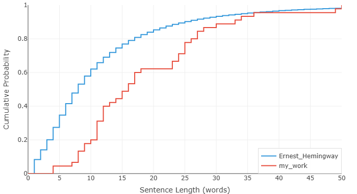

我的英语 vs 海明威 — 一次让人脸红的数据自白
上一篇拿海明威和福克纳做了个对比，数据漂亮地印证了百年来文学评论的老结论：两位大师，节奏相反，出自同一个时代。那篇写得很爽，像坐在看台上评点两个诺贝尔奖得主，安全，体面，事不关己。
这篇不一样。这篇轮到我自己了。
我把当年写的英语作文扔进了分析器，挨着海明威的数据放。不是觉得自己能跟他比——差了一万条街——而是想看看到底差在哪。一个母语文学巨人，和一个在中国教室里面学英语的小孩，用数字说话，差距长什么样。
先交代背景。我 1995 年出生，用的语料是 2013 年前后写的，那会儿十七八岁，正上高中，每天吭哧吭哧写英语作文。都不是什么创作，全是作业：议论文、读书报告、"描述一个难忘的暑假"。全世界非英语国家的学生都在写的那种东西，老师怎么教，你就怎么写。
废话少说，上图。
图一：被教科书腌入味的英语

不用分析，看图就懂了。我的曲线趴在海明威右边老远——我写的句子，平均比他的长一大截。
等等，这不反了吗？我一个词汇量捉襟见肘的老外，不应该写更短的句子才对？海明威那种英语是母语的人，不是更应该铺开长句、玩出花来？
还真不是。逻辑是反过来的。
在中国教室里面学英语，你学的压根不是一门活着的语言，是一套施工图纸。每句话主语谓语得齐全，动词得带宾语，系动词不能省，从句引导词一个不能少。什么都得写出来，什么都不能靠猜。句子跟机器似的，零件少一个就转不动。
我扒了几条自己 2013 年写的，你们感受一下：
"It is widely acknowledged that environmental protection has become an issue of great concern in contemporary society. In my opinion, there are several measures that can be taken to address this problem effectively."
（环境保护是当今社会广泛关注的问题。在我看来，我们可以采取若干措施来有效应对。）
说实话，语法一点毛病没有。但读起来什么感觉？像一台收音机在自己播自己。一个真正说英语的人，表达同样的意思，大概会这样：
"We need to take care of the planet. Here's what we can do."
（地球得护着点。我们能做的有这些。）
十二个词对三十二个词。但不只是字数的问题——一边是人话，一边是课文。
再来一条。我当年是这么写的：
"It is necessary that we should make every effort to cultivate the habit of reading extensively, for the reason that reading can broaden our horizons and enrich our knowledge."
（广泛阅读的习惯应当努力培养，因为阅读能开阔视野、增长知识。）
换个人来：
"Read more. It opens your mind."
（多读点书，脑子会变开阔。）
五个词。五个。我扯了三十个词想说的事，人家五个词说完了，还更有劲。
图表抓到的就是这个。海明威的句子短，不是因为他词穷，是因为他知道什么可以不要。"it is widely acknowledged that""in my opinion""for the reason that"——这种脚手架，他一脚踹掉。他信读者能自己把空白填上。而我呢？一个字都不敢扔，因为我压根不知道哪些是可以扔的。我没在咖啡馆听过人用英语聊天，没在饭桌上听人用英语吵架，我对英语的全部认知，来自黑板上的语法拆解。
2013 年的我，根本不知道说英语的人私下是怎么说话的。像 "Guess I'll head out, then"（"那我先走了啊"）——这句话没有主语、不用将来时、全靠一个缩略词和语气撑着。放到我十八岁的脑子里，这玩意儿根本不叫句子。句子得有个主语（I）、情态动词（will）、主动词（go）、再加个方向（out），少一样都不踏实。"I will go out then." 七个词，硬得像块门板。语法倒是全对，永远全对。
所以我的句子长。不是因为有那么多话要说，是因为不知道哪些话可以不写。
图二：用不出来的词

图一讲的是节奏，图二讲的是家底——这张更让人脸热。
头几百个最常用的英语词，我用得比海明威少，曲线在他右边。乍一看像好事：难道我的用词更高级？不是的。原因很朴素：他跟我不在一个世界里。海明威写的是打仗、钓鱼、喝酒、斗牛、谈恋爱、面对死亡；我写的是环境保护和阅读的重要性。话题不一样，用的词自然不一样。他的高频词是从日子里长出来的，我的是从作文题库里扒下来的。
但图二真正扎心的在后面——中段和尾巴。
你仔细看：我的曲线有一段一段是平的，然后突然往上跳。海明威的线是顺顺溜溜往上走的，我的却像楼梯，走一段，卡一下，再跳一格。
平的那段是什么意思？就是说，这整段频率范围内的英语词，我一个没用。一整个频段的词，在我的作文里查无此人。曲线就这么横着——那些词要么我根本不认识，要么认识但从来没想过要用，要么觉得它们"不够正式"、不配上我的作文。
然后——跳——猛地窜上去一格。这表示我终于碰到了一个我会用、也确实写了进去的词。这一跳很可能就是一个词——就靠这一个词，撑起了好长一段累积比例。
海明威那种平滑的曲线，说明一件事：人家的词汇库是满仓的。每个频段都有存货，没有沙漠，没有断崖。我这种楼梯一样的曲线呢，就是一个词汇量又小又不均匀的英语学习者，不打自招 😅。会的词就那么一小撮，翻来覆去地用；不会的词——对不起，跟不存在一样。
现在比 2013 年好多了。在英语环境里生活久了，读的东西杂了，写东西也没那么紧绷了，有些平的地方确实被填上了一些。但要我说那个楼梯已经变坡道了？那是在骗自己。远远没有。英语词汇是个巨大的城市，我到现在还有大半个城没逛过，有些街道连路牌都没认全。
数据这东西
拿自己的作文跟海明威摆在一起，不是一件让人舒服的事。像被拉到一个光线惨白的大镜子前面站着，哪里不对称、哪里有坑，全照出来了，躲都躲不掉。
但这也是一种运气。
2013 年那会儿，我根本不知道自己的英语差在哪。语法没错、老师打高分，我就觉得还行。如果当时有这张图，它会讲一个完全不一样的故事——一个句子都很长、但长得毫无必要的故事；一个词汇表看着还行、但大半词压根没用过的故事。可惜没有。我看不到。
现在能看到了。能看到，就能改。
说真的，这个时代的学习条件，好得离谱。书随便看，播客随便听，电影随便刷，跟母语者唠嗑也就一个视频的事。我十七岁那会儿被墙挡在外面、被钱挡在外面的东西，现在全摊在眼前，就差自己伸手去拿。再学不好，真说不过去了。
这么好的时代，不把英语捡起来，对不起这份运气。开始吧。